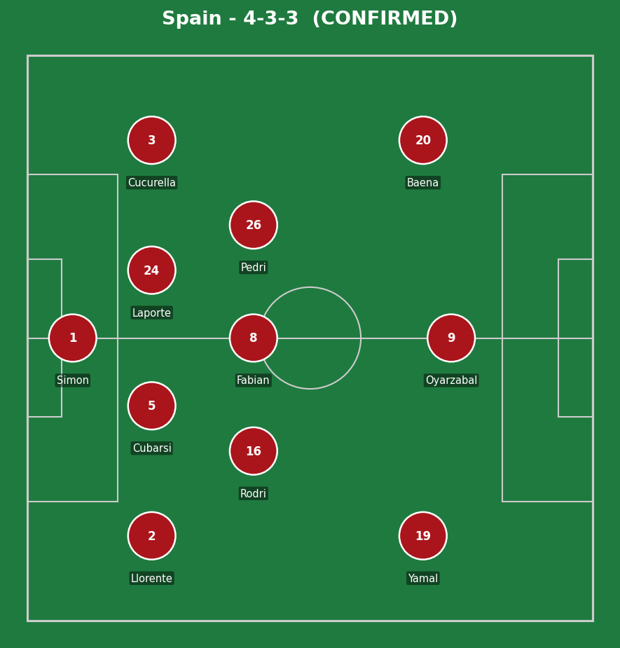
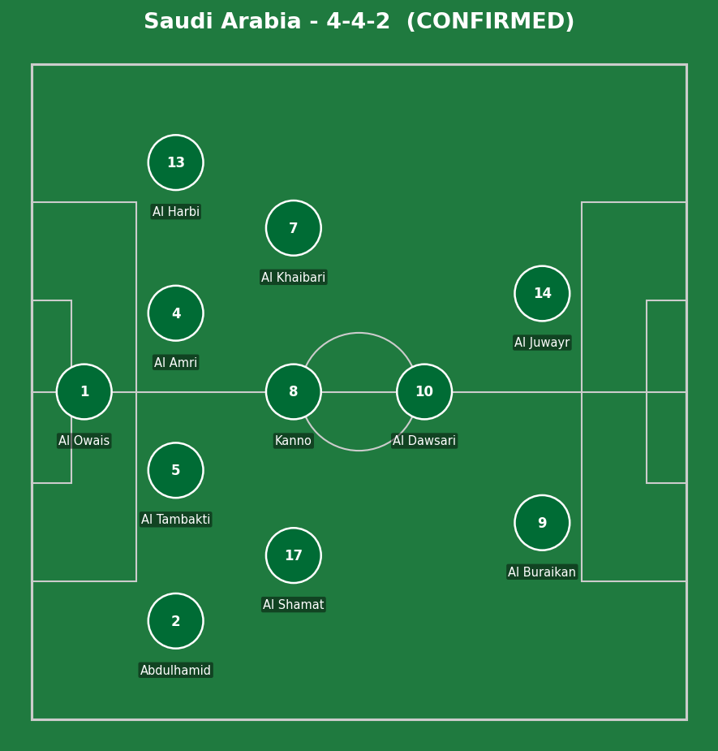
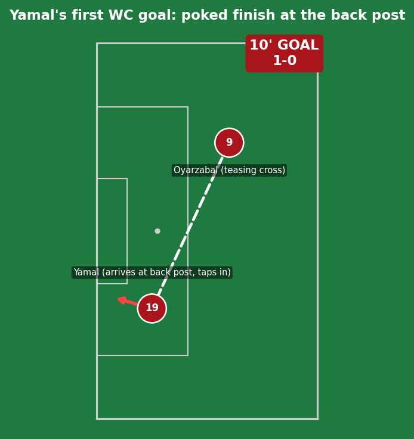
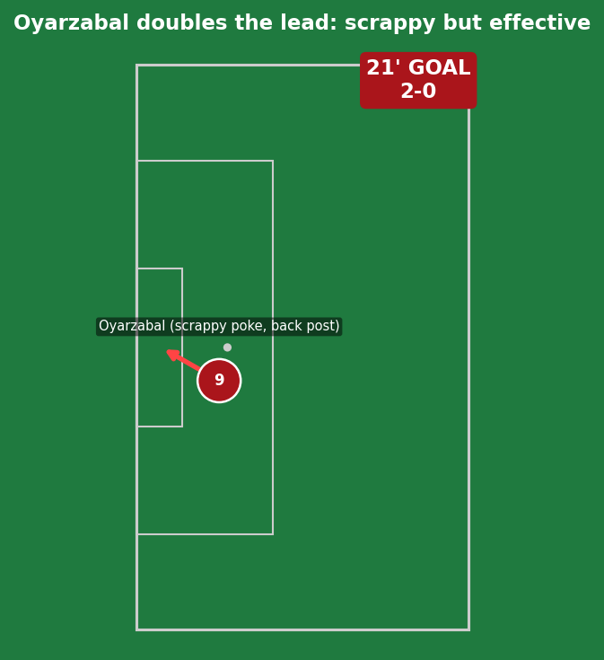
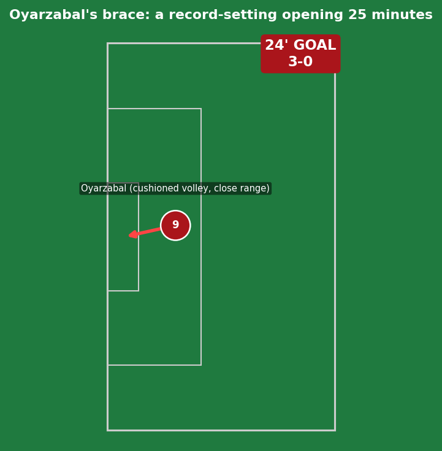
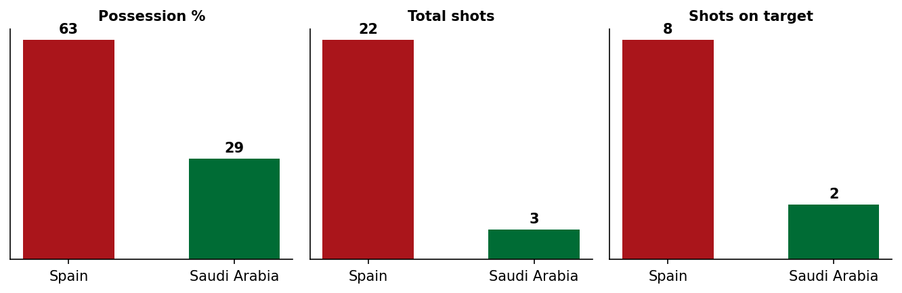
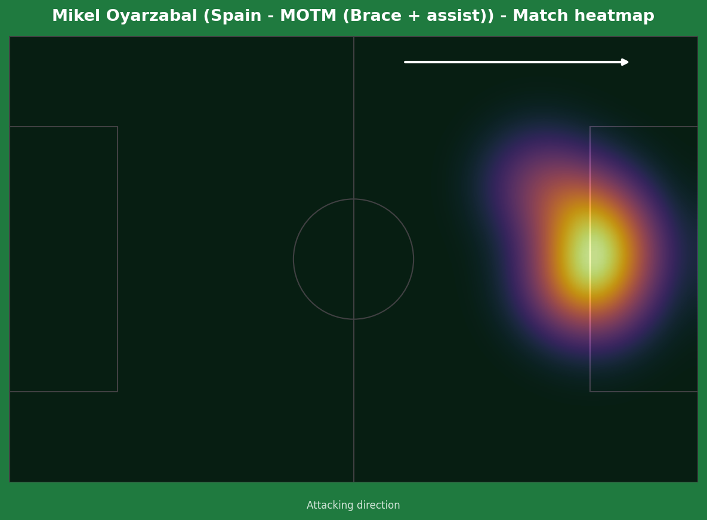
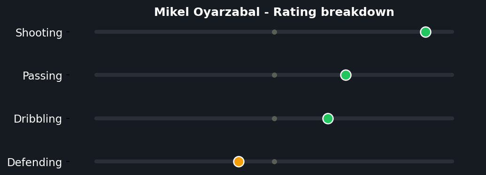
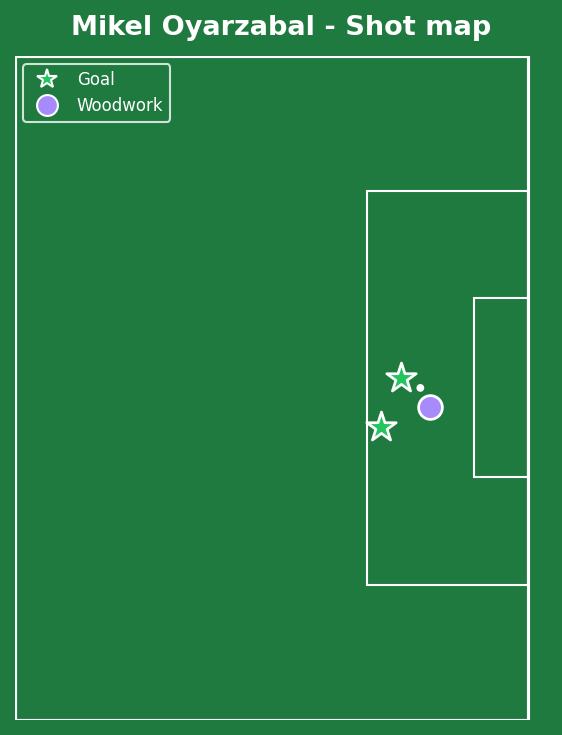

Spain answered every question raised by their shock Cape Verde draw with the loudest possible response - three goals inside the first 25 minutes, with Yamal and Oyarzabal directly involved in all of them. Both were withdrawn at half-time as a precaution with tougher tests ahead, and an unfortunate Hassan Al Tambakti own goal completed the scoreline four minutes after the restart. A stoppage-time Ferran Torres effort was correctly ruled out by VAR for offside.


Spain (4-3-3): Simon; Llorente, Cubarsi, Laporte, Cucurella; Rodri, Fabian Ruiz, Pedri; Yamal, Oyarzabal, Baena. Saudi Arabia (4-4-2): Al Owais; Abdulhamid, Al Tambakti, Al Amri, Al Harbi; Al Shamat, Kanno, Al Khaibari, Al Dawsari; Al Buraikan, Al Juwayr.
De la Fuente's decision to start Yamal from the beginning (after just a 20-minute cameo against Cape Verde) was the clearest tactical statement of the match - pairing his dribbling threat with Cucurella's overlapping runs on the same flank repeatedly tore open a Saudi back four that, like against Uruguay, tended to leave real gaps in behind. Spain completed 39 passes before their first goal, a level of patient control that contrasts with the Cape Verde performance's profligacy - quality of chance, not just quantity, was the difference here.
Saudi Arabia's 4-4-2 had worked reasonably well in containing Uruguay previously, but Spain's pace and movement out wide consistently got beyond their full-backs. There's no real structural fix to suggest here - this was a gap in individual quality and game-state pressure (chasing the match from the 10th minute on) more than a tactical miscalculation.
The key tactical moment: De la Fuente's half-time substitutions of both Yamal and Oyarzabal. With the job done inside 25 minutes, managing their minutes ahead of the pivotal Uruguay match was the smart, low-risk call.

Oyarzabal's cross was teasing and well-placed, but Yamal's contribution was the genuine quality - arriving at the back post with perfect timing and poking the finish home on a tight angle that needed real composure, not power. At 18 years and 343 days old, this made him the third-youngest player ever to score on a World Cup start, and only the second teenager to open the scoring in a World Cup match after Pele in 1958 - genuinely elite company for a player still very early in his career.

Scrappy by his own admission, but scrappy finishes inside the six-yard box still require being in the right place - a poke home at the back post that owed more to good anticipation than technique, but counted exactly the same on the scoreboard.

A genuinely well-executed cushioned volley from close range - real technique this time, not just being in the right spot. This completed a stretch where Oyarzabal became only the third player on record since 1966 to record three goal involvements inside the opening 25 minutes of a World Cup match, an extraordinary individual burst.

A 22-3 shot count is about as one-sided as a World Cup match gets - Spain's response to the Cape Verde shock could not have been more emphatic by any measure.



A genuinely historic individual burst - just the third player on record since 1966 to register three goal involvements inside a World Cup match's opening 25 minutes, in the same exclusive company as Hungary's Laszlo Fazekas from 1982. He also came within inches of a first-half hat-trick, with an outside-of-the-foot effort clipping the crossbar after a goalkeeping gift. Coming off the back of being criticized following a quiet MD1 showing (zero touches in the first 30 minutes against Cape Verde, an Opta first), this was about as complete a response as possible.
Illustrative reconstruction based on known event locations, not raw GPS tracking data.
Oyarzabal - 9.0 ⭐ MOTM (brace + assist)
Yamal - 8.5 (goal, milestone)
Cucurella - 7.5 (constant outlet)
Pedri - 7.0 (controlled tempo)
Al Owais - 5.5 (gifted possession for chance)
Al Tambakti - 4.5 (own goal)
Abdulhamid - 5.0 (overrun repeatedly)
Kanno - 6.0 (tidy in a tough afternoon)
Next: Spain face Uruguay in a genuine Group H decider. Saudi Arabia face Cape Verde, needing a response of their own.